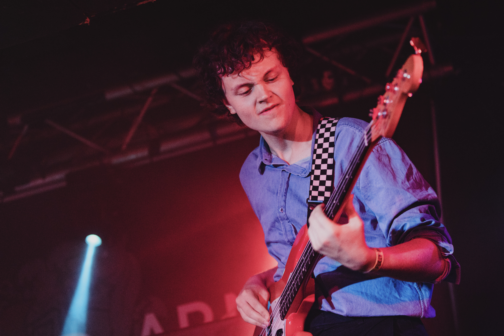
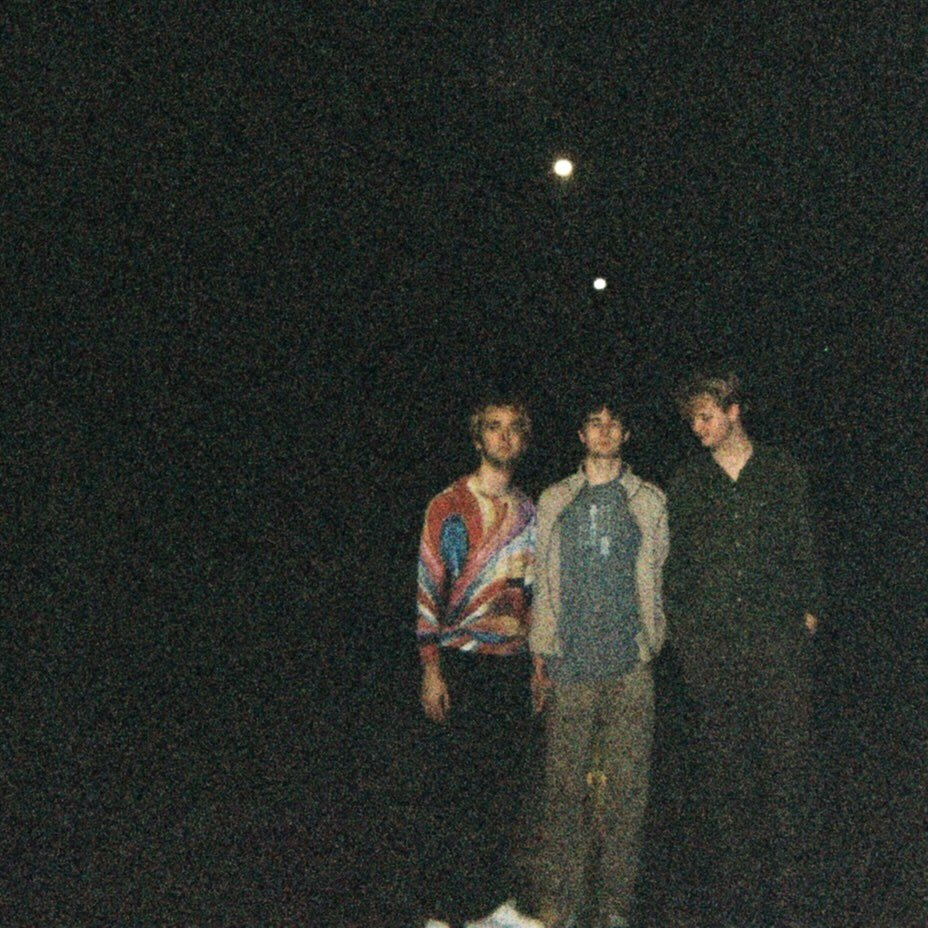

If I were to distil audio engineering into a single principle, it would undoubtedly be convergence. The character of a song emerges from the interaction of countless decisions: microphone placement, balance, panning, effects and performance all contributing to its sonic identity. What fascinates me is the point at which technical knowledge can aid in realising creative ideas — where an understanding of sound and production can be used not just to capture a piece of music, but fully interpret the ideas of the artist.
As both an engineer and producer, I have completed a number of projects in which I employ this idea, working across numerous genres including rock, jazz, soul, folk and electronic. One project saw me recording a jazz quartet, who wanted to craft a pristine sound reminiscent of of ECM, requiring meticulous microphone placement and balanced mixing decisions. Another involved the capturing of a Marvin Gaye cover, inducing the research and employment of Motown recording and production techniques.
In addition to production, I am an avid player of music, with over 8 years of experience in bass, guitar and drums. I've played on numerous sessions throughout the past few years, primarily rock, jazz, funk and soul, and I regularly play in a band formed by me and some friends, Disappearer, which we formed during uni, performing gigs across Yorkshire.


Outside of production, I have additionally written numerous essays, particularly historical reviews on topics such as:
Pictured: right of first pic, standing by poster of my dissertation project: Exploring the Sounds of Música Popular Brasileira, 1968-1972.